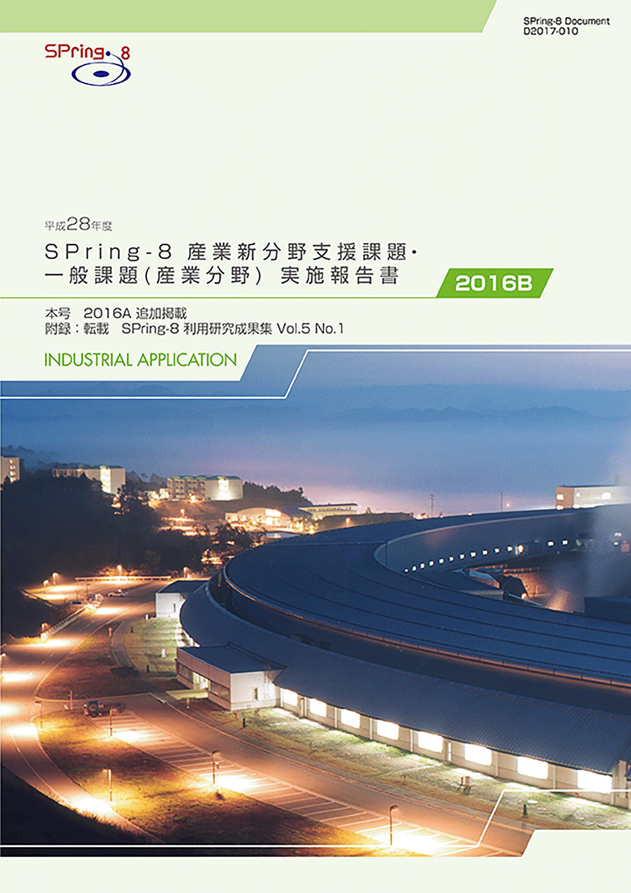
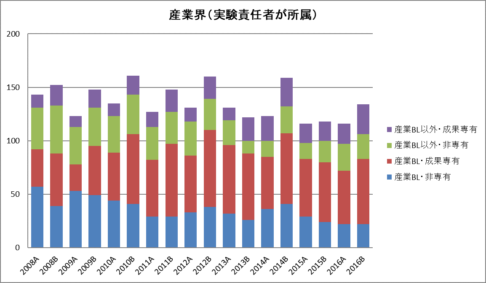

1. はじめに2. 課題募集制度の概要
3. 成果公開の考え方
4. 実施状況
5. 産業利用分野の利用動向と課題
6. 報告書
* 送付を希望される方は、連絡先（氏名、所属、〒住所、E-mail）をご記入の上、 事務局 support@spring8.or.jp までE-mailでご連絡ください。
平成26年度（2014A期）より新たな領域指定型重点課題として、これまで放射光利用が少なかった産業分野のSPring-8利用の拡大を目指して産業新分野支援課題の募集を開始した。本報告書は2016B期の産業利用分野における課題実施状況の報告を目的として、同利用期に実施した一般課題（産業利用分野）と産業新分野支援課題のうちSPring-8利用研究成果集としての審査を行わなかった課題の報告書を収録したものである。
- 一般課題（産業利用分野）
一般課題（産業利用分野）の課題とは、課題申請の際に産業利用分野（I）での課題審査を希望した成果非専有の一般課題（課題審査は課題審査委員会産業利用分科会が行う）である。これまでは一般課題（産業利用分野）への申請は、申請者の所属機関を問わずに認めていたが、2015A期からは実験責任者もしくは共同実験者に民間企業もしくは、それに準じる機関に所属する者が含まれていることを申請要件とした。民間企業に準ずる機関とは、民間企業からの委託による試験・研究・開発を事業に含んでいる機関と定義している。また、地方自治体が設置している公設置試験場や地方独立行政法人等（○○県工業技術センター）は、民間企業に準ずる機関から除外している。なお、民間企業に所属する者が産業利用分野以外の分野に申請した課題は一般課題（産業利用分野）としては扱わない。一般課題（産業利用分野）の募集は他分野の一般課題と同様に、年2回の課題募集期間において全ての共用ビームラインへの申請が可能である。一般課題（産業利用分野）に特徴的な制度は以下の6項目である。
- 産業利用ビームラインI（BL19B2）、II（BL14B2）、III（BL46XU）は半期ごとに前半を1期、後半を2期とした2回の課題募集を行う（年4回課題募集を実施）。1期と2期の両方で利用実験を行いたい場合は、継続的な研究内容の課題であってもその都度、新規課題として応募することが必要である。なお2013A期よりこれらのビームラインでは成果非専有の一般課題は、審査希望分野が産業利用分野である一般課題（産業利用分野）のみとした。これらのビームラインを指定した申請であるものの、審査希望分野が他分野の課題は申請者の希望にかかわらず産業利用分野で審査する。
- 新規利用拡大の観点から課題審査において利用経験を考慮する。
- 民間企業利用拡大の観点から課題審査において所属機関を考慮する。
- 課題実施後約2～4か月以内に所定の書式の産業利用課題実施報告書を提出する。なお、この報告書はSPring-8利用研究成果集として審査を受けることも可能である。
- 全採択課題に担当コーディネーターを配置する。
- 科学技術的妥当性に関する審査は
(1)産業基盤技術としての重要性および発展性
(2)社会的意義および社会経済への寄与度の観点を重視して実施する
- 産業新分野支援課題
「産業新分野支援課題」を領域指定型の重点研究課題として、平成25年9月24日に指定した。その狙いは以下のとおりである。
これまでの産業利用促進の取り組みにより、一部の産業分野ではSPring-8の放射光利用が普及した一方、経済のグローバル化を反映して国内の産業構造も大きく変化し、新しい産業の創生をもたらすような研究開発が必要になっている。そこで、新産業分野の研究開発を促進するため、SPring-8で放射光利用に新規に取り組む産業分野の課題に重点的な支援を行う産業新分野支援課題を実施する。
2-1） 募集の対象
課題の目的に沿って、SPring-8での放射光利用実績の少ない産業分野の研究開発に関する課題を募集の対象とする。該当する産業分野の例として食品･食品加工、農林水産物、建設資材、金属加工、鉱物資源が挙げられるが、この限りではない。例示された分野に該当しない場合は、課題申請の際に放射光利用実績の少ない産業分野であることの説明が求められる。なお、一般課題（産業利用分野）のような実験責任者及び共同実験者の所属機関に関する要件は設定しない。
2-2） 対象ビームライン、シフト数割合、及び募集
産業利用ビームラインI（BL19B2）、II（BL14B2）、III（BL46XU）を対象に、ユーザー実験に供するビームタイムのうち20%以内（施設留保を含めたユーザータイムの16%以内）を配分する。
募集は一般課題と同時期に半期2回行う。なお、1期募集において採択された通期課題の2期分のシフト数も含めた合計シフト数が半期を通じたビームタイムの上限に達した場合は2期に募集を行わない。
2-3） 通期課題
1期、2期の両方で利用実験を行いたい場合は、その都度新規課題としての応募が必要であるが、継続的･計画的な実施により一層の成果創出が期待される課題は、“通期課題”とし1期応募の折に2期分のシフト数も含めた申請を受付ける。なお、2期は通期課題の募集は行わない。
2-4） 審査
一般課題（産業利用分野）に先んじて課題審査委員会産業利用分科会が審査を行う。なお、産業新分野支援課題として不採択となった課題は、自動的に一般課題（産業利用分野）の課題として、他の一般課題と一緒に改めて審査される。産業新分野支援課題においては一般課題（産業利用分野）の観点に加えて研究対象がSPring-8での放射光利用の新規な産業分野に該当するかどうかも含めて審査する。
2-5） 報告
WEBより提出するビームタイム利用報告書、利用実験課題報告書に加えて課題実施後約2～3か月以内に所定の書式の産業新分野課題実施報告書を提出する。なお、この報告書はSPring-8利用研究成果集として審査を受けることも可能である。
成果の公開については、産業新分野支援課題、一般課題（産業利用分野）ともに他の成果非専有の一般課題と同様に学術誌上への論文掲載（博士論文も含む）もしくはSPring-8利用研究成果集への採録による成果公開が求められる。この産業利用課題実施報告書及び産業新分野支援課題実施報告書の提出は成果の公開とは認定されないが、これらの報告書は著者からの申し出によりSPring-8利用研究成果集としての審査を受けることが可能である。SPring-8利用研究成果集としての審査を受けない実施報告書は、JASRIコーディネーター等による校閲を経て課題実施期が終了して約6か月後に出版･公開されるが、それ以外はSPring-8利用研究成果集としての審査終了後に公開される。
なお、平成28年度2016B期の一般課題（産業利用分野）及び産業新分野支援課題の実施報告は、平成30年8月末から9月上旬に開催予定の「第15回SPring-8産業利用報告会」等で口頭及びポスター形式での報告を予定している。
以下に平成28年度2016B期の産業新分野支援課題、及び一般課題（産業利用分野）の応募・採択結果を表1、表2にまとめる。
- 応募・採択結果 産業新分野支援課題
表 1．応募時期及び研究機関別課題応募・採択結果
*産業新分野支援課題で不採択となり、一般課題として再審査され採択された課題は採択数から除外している(第1期一般課題採択 産業界1課題、第2期一般課題採択 産業界1課題)。募集時期 機関分類 応募数採択数＊採択率（%）第1期募集学官7342.9産業界10*0.0*合計8337.5第2期募集学官100.0産業界21*50.0*合計3133.3総計11436.4
産業新分野支援課題の応募数、採択数は直前の2016A期の約2/3, 前年同期の2015B期の約半分で、これまでで最も少なくなった。なかでも産業界の課題の申請数減少が著しく、それに伴って採択数も大幅に減少し2016B期で採択された産業界より申請はれた産業新分野課題は1課題にとどまった。申請数、採択数と同様に採択率も36.4%と従来の半分以下であった。産業新分野支援課題での主な不採択理由は、同課題の趣旨に適していない（従来よりSPring-8利用が少ない産業利用分野に該当しない）であり、一般課題として再審査されたが、一般課題で採択されたものは産業界から提案された2課題のみであり、学官より申請され一般課題で再審査された5課題は全て不採択となった。結果的には産業界より産業新分野支援課題に申請された3課題は一般課題採択も含めて全課題が採択（最終採択率100%）となる一方、学官から申請された課題の採択率は37.5%と極めて低く、少々不思議な結果となった。なお、産業新分野支援課題の対象分野に該当した課題が産業界より一般課題に申請され、採択となっている。
- 応募・採択結果 一般課題（産業利用分野）
表2．応募時期及び研究機関別一般課題応募・採択結果
*応募数と採択数には産業新分野支援課題で不採択となり、一般課題として再審査された課題（応募数1期学官4 産業界1、2期 学官1産業界1, 採択数1期 学官0、産業界1, 2期 学官0、産業界1）を含む。また、採択後に12条課題に分類されるJASRI職員から申請された課題を応募数（1期 課題、2期 4課題 ）、採択数（1期 1課題、2期 4課題を除く。一般課題と同時に審査される大学院生提案型課題の応募数（1期 19課題、2期 8課題）、採択数（1期 8課題、2期 5課題）を除く。募集時期 機関分類 応募数＊採択数採択率（%）第1期募集 学官583662.1産業界372567.6合計956164.2第2期募集 学官241770.1産業界12650.0合計362363.9総計1318464.1
一般課題（産業利用分野）の応募数課題は2015B期よりもやや多い131課題であった。2016B第1期の採択率は2015B第1期とほぼ同様な水準であったが、第2期は採択数23課題、採択率63.9%で、採択15課題、採択率40.5%だった2015B期の約1.5倍の課題が採択となった。以上のように2016B第2期は採択数が前年比8件増となったが、産業新分野支援課題の採択数が前年比5件減となっていることが主な原因と考えられる。2016B期においては、第2期の産業界が申請した課題の採択率が最も低くなっている。不採択となった6件のうち4件はBL46XUでのHAXPES測定の課題で実験責任者はHAXPESの測定経験を有していなかった。HAXPESはSPring-8以外での実施が難しいため、HAXPES未経験者の課題採択率を高めるために研修会実施回数を増やすなどの対応が今後必要と思われる。
- SPring-8利用研究成果集としての審査
前記のとおり2011B期より成果公開の扱いが変更になったため、実験責任者の希望に応じて重点産業利用報告書をSPring-8利用研究成果集(現在はSPring-8/SACLA利用研究成果集)として査読審査を受けて公開文書として扱うことも可能とした。産業新分野支援課題及び産業利用分野の一般課題も同様で、SPring-8/SACLA利用研究成果集として審査を受ける公開文書とすることができる。SPring-8/SACLA利用研究成果集への公開は査読審査が終了し成果審査委員会での承認後となるため、SPring-8/SACLA利用研究成果集に投稿予定の課題は採録していない。このため、今回は2016B期の採録対象課題となる88課題のうち76課題を掲載している。
-
2016B期に実施され全共同利用研究課題719課題のうち、民間企業等の産業界に所属する利用者が実験責任者であった課題は134課題となった。産業界の実施課題が全実施課題に占める割合は2012Bの20.8%から毎期減少し2016A期には15.7%にまで低下したが、2016B期は18.6%と2014B期並みにまで回復した。この回復は測定代行など成果専有課題の実施数の増加によるものである。
産業利用ビームラインが現在の3本体制になった2008A期以降の産業界課題の実施数推移を図1に示す。2013年を除いて毎年A期よりもB期の方が実施数が多く、年度後半の方が需要が高いことがわかる。このように現在の課題募集制度は産業界の利用者のニーズに十分に応えられていないため、半期3回募集など産業界利用者の要望に対応する制度の導入に向けて検討を行っている。一方、2013年までは減少傾向にあった産業利用BL以外での成果非専有課題が若干増加する傾向が見られる。これは産業界による放射光利用技術の多様化を示すものと考えている。

図1. 共同利用実験として実施された産業界課題の実施数推移
＊採録対象
2016B期に実施した産業新分野支援課題及び一般課題（産業利用分野）76課題に加えて、SPring-8/SACLA研究成果集のSection B（産業利用）に新に掲載された24課題23報（成果公開優先利用課題は2課題で1報）を採録している。
SPring-8利用研究成果集 Vol 5 No.1 （http://user.spring8.or.jp/resrep/?cat=24)）
「平成28年度 SPring-8産業新分野支援課題・一般課題（産業分野）実施報告書（2016B）」送付を希望される方は、 連絡先（氏名,所属,〒住所,E-mail）をご記入の上、事務局 support@spring8.or.jp までE-mailでご連絡ください。